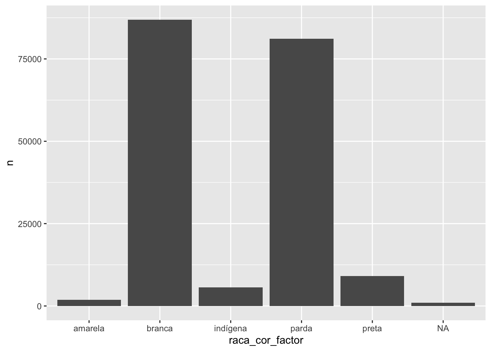
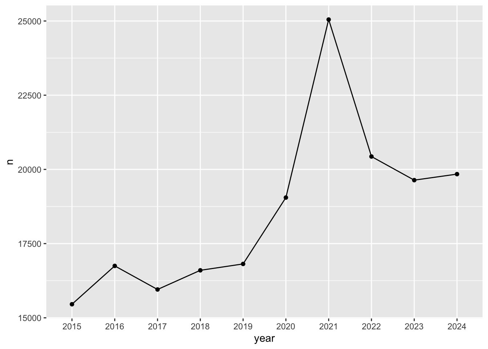
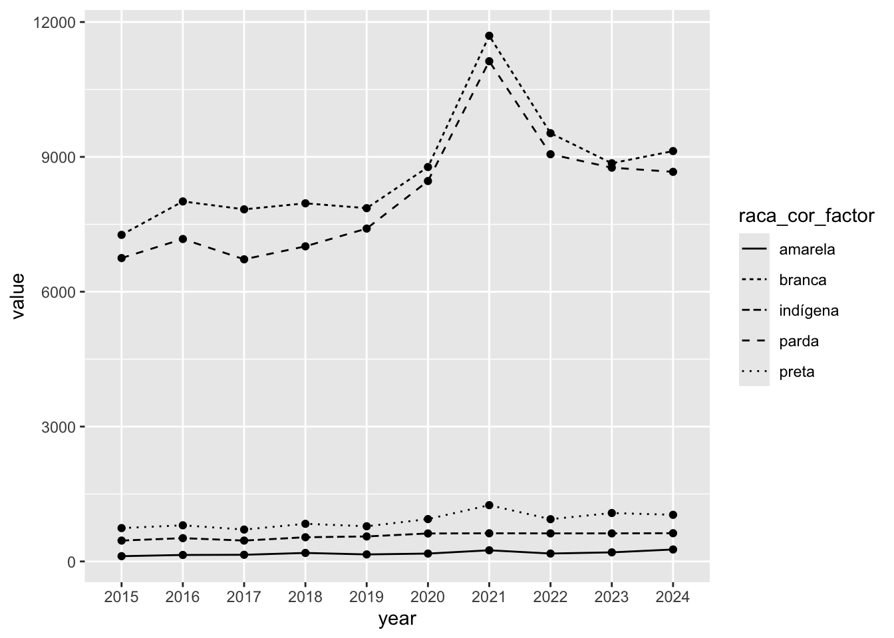
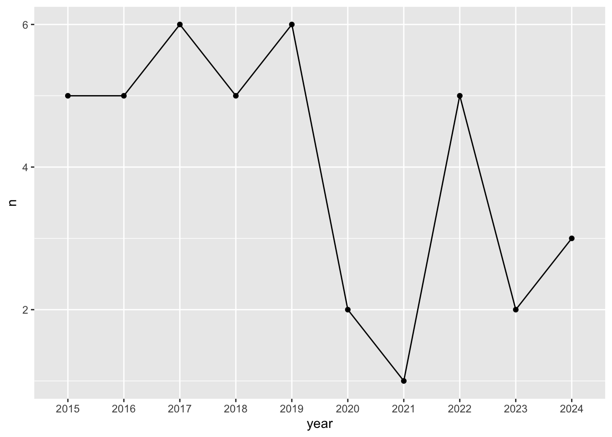
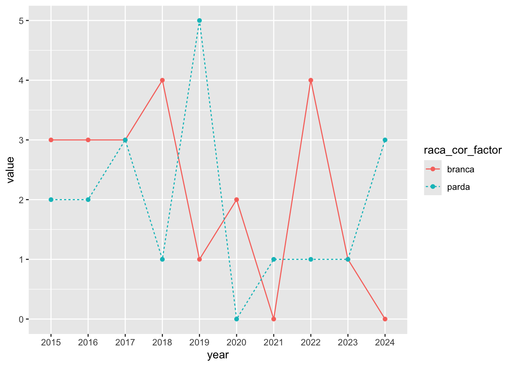
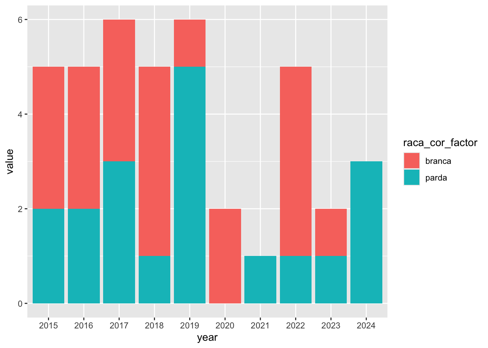
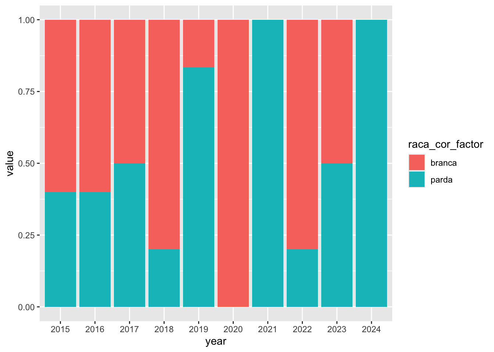

library(microdatasus)
library(dplyr)
library(tidyverse)
library(maditr)
library(kableExtra)
SIM-DO é o sistema de informação de mortalidade.
dados_ms = fetch_datasus(year_start = 2015,
year_end = 2024,
uf = "MS",
information_system = "SIM-DO")
Save dados_ms only a single time
saveRDS(dados_ms, "./data/dados_ms.rds")
Load dados_ms
dados_ms <- readRDS("./data/dados_ms.rds")
library(expss)
cross_cases(dados_ms, RACACOR)| #Total | |
|---|---|
| RACACOR | |
| 1 | 86916 |
| 2 | 9122 |
| 3 | 1821 |
| 4 | 81135 |
| 5 | 5664 |
| #Total cases | 184658 |
numero total de brancos, pardos, pretos, amarelos, indígenas
racacor_df <- dados_ms %>% count(RACACOR, sort = TRUE)Transforma coluna com caracteres em nomes de raça/cor
racacor_df <- racacor_df %>%
dplyr::mutate(raca_cor_factor = ifelse(racacor_df$RACACOR == "1", "branca",
ifelse(racacor_df$RACACOR == "2", "preta",
ifelse(racacor_df$RACACOR == "3", "amarela",
ifelse(racacor_df$RACACOR == "4", "parda",
ifelse(racacor_df$RACACOR == "5", "indígena",
ifelse(racacor_df$RACACOR == "9", "ignorado","0")))))))
Nesta parte, poderemos estimar o número de indivíduos sob risco, considerando as categorias raciais brasileiras.
library(ggplot2)
# Basic barplot
ggplot(data=racacor_df, aes(x=raca_cor_factor, y=n)) +
geom_bar(stat="identity")
Transforma variável DTOBITO usando função dmy criando variável (coluna) YMD em yyyy-mm-dd. Referência: https://rstudio.github.io/cheatsheets/html/lubridate.html
library(lubridate)
dados_selected <- dados_ms %>%
select(CONTADOR, RACACOR, DTOBITO, CAUSABAS, DTNASC, IDADE) %>%
mutate(YMD = dmy(dados_ms$DTOBITO))
library(stringr)
# Split Each Sample
dados_year <- str_split_fixed(dados_selected$YMD, "-", 3)
# Construct Vector Maintaining parts of interest
split_vector_year <- paste0(dados_year[,1])
# Add vector to DF, after column of interest
dados_appended <- add_column(dados_selected, year = split_vector_year, .after = "YMD")
Referência: https://dplyr.tidyverse.org/reference/group_by.html
Cálculos com valores anuais totais:
dados_agregados_year <- dados_appended %>%
group_by(year) %>%
summarise(n = n())dados_agrupados_racaCor <- dados_appended %>%
group_by(RACACOR) %>%
summarise(n = n())
dados_agregados_racaCor <- dados_appended %>%
group_by(year) %>%
group_by(RACACOR) %>%
summarise(n = n())
# dados_agregados_racaCor <- dados_appended %>%
# group_by(chr) %>%
# summarise(avg = mean(x)) %>%
# arrange(chr, .locale = "en")Remover NAs dos dados agregados por ano
dados_agregados_year <- dados_agregados_year[ which(
dados_agregados_year$year != "NA"), ]
library(ggplot2)
# Basic line plot with points
ggplot(data=dados_agregados_year, aes(x=year, y=n, group=1)) +
geom_line()+
geom_point()
Mortalidade anual total (figura acima) e mortalidade anual usando a variável Raça/Cor (figura abaixo) foram feitas usando STHDA (2024) como referência.
dados_race_year_selcd <- dados_appended %>%
select(RACACOR, year)
dados_agrupados_racaCor <- dados_race_year_selcd %>%
group_by(RACACOR) %>%
summarise(n = n())
library(reshape2)
#use cast() to convert data frame from long to wide format
wide_dados_appended <- dcast(dados_race_year_selcd, year ~ RACACOR)## Warning in dcast(dados_race_year_selcd, year ~ RACACOR): The dcast generic in
## data.table has been passed a data.frame and will attempt to redirect to the
## relevant reshape2 method; please note that reshape2 is superseded and is no
## longer actively developed, and this redirection is now deprecated. Please do
## this redirection yourself like reshape2::dcast(dados_race_year_selcd). In the
## next version, this warning will become an error.## Using 'year' as value column. Use 'value.var' to override## Aggregation function missing: defaulting to length# wide_dados_appended <- dcast(dados_race_year_selcd, RACACOR ~ year)
# Melt the data frame
dados_appended_melted <- melt(wide_dados_appended, id.vars = "year")## Warning in melt.default(wide_dados_appended, id.vars = "year"): The melt
## generic in data.table has been passed a data.frame and will attempt to redirect
## to the relevant reshape2 method; please note that reshape2 is superseded and is
## no longer actively developed, and this redirection is now deprecated. To
## continue using melt methods from reshape2 while both libraries are attached,
## e.g. melt.list, you can prepend the namespace, i.e.
## reshape2::melt(wide_dados_appended). In the next version, this warning will
## become an error.
Obter variável raça/cor como palavras descritivas ao invés de números.
dados_appended_melted <- dados_appended_melted %>%
dplyr::mutate(raca_cor_factor = ifelse(dados_appended_melted$variable == "1", "branca",
ifelse(dados_appended_melted$variable == "2", "preta",
ifelse(dados_appended_melted$variable == "3", "amarela",
ifelse(dados_appended_melted$variable == "4", "parda",
ifelse(dados_appended_melted$variable == "5", "indígena",
ifelse(dados_appended_melted$variable == "9", "ignorado","0")))))))
Remove NA in year
dados_appended_melted <- dados_appended_melted[ which(
dados_appended_melted$year != "NA"), ]Remove 0 in raça/cor
dados_appended_melted <- dados_appended_melted[ which(
dados_appended_melted$raca_cor_factor != "0"), ]Visualizar plot
ggplot(dados_appended_melted, aes(x=year, y=value, group=raca_cor_factor)) +
geom_line(aes(linetype=raca_cor_factor))+
geom_point()
# wait to change the variable names:
# names(dados_appended_melted)[names(dados_appended_melted) == 'variable'] <- 'RACACOR'
# names(dados_appended_melted)[names(dados_appended_melted) == 'value'] <- 'n'
dados_nb <- dados_appended[ which(
dados_appended$CAUSABAS == "C749"), ]
dim(dados_nb)## [1] 40 8# dados_estados_nb_2013 <- data_estados[ which(
# data_estados$CAUSABAS == "C749"), ]
# dim(dados_estados_nb_2013)
dados_agregados_nb_year <- dados_nb %>%
group_by(year) %>%
summarise(n = n())
ggplot(data=dados_agregados_nb_year, aes(x=year, y=n, group=1)) +
geom_line()+
geom_point()
kable(dados_nb, caption="dados_nb") %>%
kable_styling("striped", full_width = F, font_size = 12) %>%
scroll_box(width = "100%", height = "600px")| CONTADOR | RACACOR | DTOBITO | CAUSABAS | DTNASC | IDADE | YMD | year | |
|---|---|---|---|---|---|---|---|---|
| 3561…3561 | 3561 | 1 | 08022015 | C749 | 28111962 | 452 | 2015-02-08 | 2015 |
| 8019…8019 | 8019 | 4 | 18072015 | C749 | 13032000 | 415 | 2015-07-18 | 2015 |
| 9129…9129 | 9129 | 1 | 17022015 | C749 | 24031975 | 439 | 2015-02-17 | 2015 |
| 12844…12844 | 12844 | 4 | 06092015 | C749 | 14101980 | 434 | 2015-09-06 | 2015 |
| 15329…15329 | 15329 | 1 | 01122015 | C749 | 18051977 | 438 | 2015-12-01 | 2015 |
| 4075…19532 | 4075 | 4 | 01042016 | C749 | 07081929 | 486 | 2016-04-01 | 2016 |
| 4886…20343 | 4886 | 4 | 17042016 | C749 | 08062011 | 404 | 2016-04-17 | 2016 |
| 9372…24829 | 9372 | 1 | 16072016 | C749 | 01022006 | 410 | 2016-07-16 | 2016 |
| 15777…31234 | 15777 | 1 | 08122016 | C749 | 17031941 | 475 | 2016-12-08 | 2016 |
| 16744…32201 | 16744 | 1 | 31122016 | C749 | 26112009 | 407 | 2016-12-31 | 2016 |
| 708…32914 | 708 | 1 | 12022017 | C749 | 15111954 | 462 | 2017-02-12 | 2017 |
| 4659…36865 | 4659 | 1 | 25042017 | C749 | 09042014 | 403 | 2017-04-25 | 2017 |
| 5826…38032 | 5826 | 1 | 21062017 | C749 | 17041935 | 482 | 2017-06-21 | 2017 |
| 8903…41109 | 8903 | 4 | 22072017 | C749 | 24011992 | 425 | 2017-07-22 | 2017 |
| 9228…41434 | 9228 | 4 | 29102017 | C749 | 06121949 | 467 | 2017-10-29 | 2017 |
| 12768…44974 | 12768 | 4 | 19092017 | C749 | 02021977 | 440 | 2017-09-19 | 2017 |
| 3454…51614 | 348488 | 1 | 06022018 | C749 | 24101958 | 459 | 2018-02-06 | 2018 |
| 3465…51625 | 348499 | 1 | 23022018 | C749 | 02031985 | 432 | 2018-02-23 | 2018 |
| 7745…55905 | 352823 | 1 | 23042018 | C749 | 27091974 | 443 | 2018-04-23 | 2018 |
| 10705…58865 | 355823 | 1 | 07052018 | C749 | 19021923 | 495 | 2018-05-07 | 2018 |
| 12122…60282 | 357252 | 4 | 28082018 | C749 | 22032008 | 410 | 2018-08-28 | 2018 |
| 3388…68148 | 261139 | 4 | 15062019 | C749 | 10112008 | 410 | 2019-06-15 | 2019 |
| 4239…68999 | 351729 | 4 | 27012019 | C749 | 07072011 | 407 | 2019-01-27 | 2019 |
| 8282…73042 | 651704 | 4 | 02042019 | C749 | 16071966 | 452 | 2019-04-02 | 2019 |
| 8567…73327 | 671119 | 1 | 10082019 | C749 | 18041992 | 427 | 2019-08-10 | 2019 |
| 9911…74671 | 799494 | 4 | 11122019 | C749 | 29062015 | 404 | 2019-12-11 | 2019 |
| 16017…80777 | 1295135 | 4 | 31122019 | C749 | 12082014 | 405 | 2019-12-31 | 2019 |
| 5419…86994 | 514509 | 1 | 28042020 | C749 | 03031947 | 473 | 2020-04-28 | 2020 |
| 16716…98291 | 1371299 | 1 | 20112020 | C749 | 02051939 | 481 | 2020-11-20 | 2020 |
| 11835…112461 | 832786 | 4 | 11062021 | C749 | 12111947 | 473 | 2021-06-11 | 2021 |
| 544…126219 | 30654 | 4 | 06042022 | C749 | 18081941 | 480 | 2022-04-06 | 2022 |
| 7694…133369 | 554320 | 1 | 10032022 | C749 | 29122018 | 403 | 2022-03-10 | 2022 |
| 11317…136992 | 845048 | 1 | 09072022 | C749 | 04072018 | 404 | 2022-07-09 | 2022 |
| 14498…140173 | 1067996 | 1 | 26082022 | C749 | 26031972 | 450 | 2022-08-26 | 2022 |
| 15518…141193 | 1167695 | 1 | 20082022 | C749 | 27021948 | 474 | 2022-08-20 | 2022 |
| 3226…149335 | 260153 | 1 | 10032023 | C749 | 09012018 | 405 | 2023-03-10 | 2023 |
| 18972…165081 | 1416606 | 4 | 19122023 | C749 | 26081945 | 478 | 2023-12-19 | 2023 |
| 1514…167261 | 113565 | 4 | 30012024 | C749 | 17022011 | 412 | 2024-01-30 | 2024 |
| 9996…175743 | 795199 | 4 | 06072024 | C749 | 22062018 | 406 | 2024-07-06 | 2024 |
| 14190…179937 | 1102838 | 4 | 15092024 | C749 | 06082002 | 422 | 2024-09-15 | 2024 |
dim(dados_nb)## [1] 40 8dados_nb_race_year_selcd <- dados_nb %>%
select(RACACOR, year)
# dados_nb_race_2013_selcd <- dados_estados_nb_2013 %>%
# select(RACACOR, CAUSABAS)
use cast() to convert data frame from long to wide format
library(reshape2)
wide_dados_nb_appended <- dcast(dados_nb_race_year_selcd, year ~ RACACOR)## Warning in dcast(dados_nb_race_year_selcd, year ~ RACACOR): The dcast generic
## in data.table has been passed a data.frame and will attempt to redirect to the
## relevant reshape2 method; please note that reshape2 is superseded and is no
## longer actively developed, and this redirection is now deprecated. Please do
## this redirection yourself like reshape2::dcast(dados_nb_race_year_selcd). In
## the next version, this warning will become an error.## Using 'year' as value column. Use 'value.var' to override## Aggregation function missing: defaulting to length
Melt the data frame
dados_nb_appended_melted <- melt(wide_dados_nb_appended, id.vars = "year")## Warning in melt.default(wide_dados_nb_appended, id.vars = "year"): The melt
## generic in data.table has been passed a data.frame and will attempt to redirect
## to the relevant reshape2 method; please note that reshape2 is superseded and is
## no longer actively developed, and this redirection is now deprecated. To
## continue using melt methods from reshape2 while both libraries are attached,
## e.g. melt.list, you can prepend the namespace, i.e.
## reshape2::melt(wide_dados_nb_appended). In the next version, this warning will
## become an error.Obter variável raça/cor como palavras descritivas ao invés de números.
dados_nb_appended_melted <- dados_nb_appended_melted %>%
dplyr::mutate(raca_cor_factor = ifelse(dados_nb_appended_melted$variable == "1", "branca",
ifelse(dados_nb_appended_melted$variable == "2", "preta",
ifelse(dados_nb_appended_melted$variable == "3", "amarela",
ifelse(dados_nb_appended_melted$variable == "4", "parda",
ifelse(dados_nb_appended_melted$variable == "5", "indígena",
ifelse(dados_nb_appended_melted$variable == "9", "ignorado","0")))))))
Remove NA in year
dados_nb_appended_melted <- dados_nb_appended_melted[ which(
dados_nb_appended_melted$year != "NA"), ]
Remove 0 in raça/cor
dados_nb_appended_melted <- dados_nb_appended_melted[ which(
dados_nb_appended_melted$raca_cor_factor != "0"), ]
Visualizar plot
ggplot(dados_nb_appended_melted, aes(x=year, y=value, group=raca_cor_factor, color=raca_cor_factor)) +
geom_line(aes(linetype=raca_cor_factor))+
geom_point()
Stacked Graph
ggplot(dados_nb_appended_melted, aes(fill=raca_cor_factor, y=value, x=year)) +
geom_bar(position="stack", stat="identity")
Stacked + Graph
ggplot(dados_nb_appended_melted, aes(fill=raca_cor_factor, y=value, x=year)) +
geom_bar(position="fill", stat="identity")